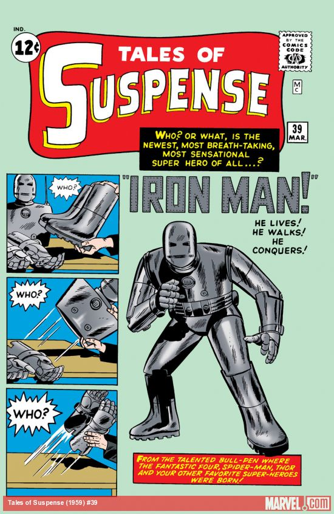

Tales of Suspense #39
Comic : Marvel
Starting of the Legacy : Iron Man
| Issue No | About |
|---|---|
| #39 | Introduced the superhero Iron Man by editor and plotter Lee, scripter Lieber, and artists Heck and Jack Kirby. |
| #40 | Iron Man was redesigned. |
| #41 | Introduced a criminal scientist and Ph.D., Carl Strange. Making his sole appearance in the Iron Man story "The Stronghold of Dr. Strange". |
| #48 | Iron man got his first look with golden and red color suit similar to modern one. |
| #50 | The Mandarin debuted and would become one of Iron Man's major enemies. |
| #52 | Black Widow first appearance. |
| #49-#58 | One anthological story each issue acquired a framing sequence and ran as "Tales of the Watcher," narrated by the namesake cosmic witness introduced in The Fantastic Four #13 and used as a Marvel Universe supporting character since. |
| #53-#58 | Cover logo was "Tales of Suspense featuring The Power of Iron Man". |
| #73 | Scripting started for "My Life for Yours" for Iron Man. |
In the Marvel Comics universe, Jarvis is the Avengers' loyal butler. In the 'Iron Man' films, J.A.R.V.I.S. is the name of Stark's AI system that assists him in superhero-ing. It's also an acronym that stands for "Just a Rather Very Intelligent System."
Guitar Theory
MusicBrief Introduction
Whether you’re young or old, there’s no better feeling than learning to play an instrument. While many attempt to learn the guitar, it is unfortunately very common for beginners to give up after only a couple of months. Guitar lessons with an instructor can be expensive.
| No | Total Chords |
|---|---|
| 1 | C-Chord |
| 2 | D-Chord |
| 3 | G-Chord |
| 4 | E-Minor Chord |


Drums Theory
MusicBrief Introduction
Do you want to learn essential drum set theory and notation? Are you a beginner or intermediate drummer that would like to learn how to count various time signatures, note values, and sub-divisions? If the answer to either of those questions is yes, you've come to the right place.
| No | Total Notation |
|---|---|
| 1 | Counting Quarter Notes |
| 2 | Counting Eighth Notes |
| 3 | Counting Sixteenth Notes |
| 4 | Counting Eighth Note Triplets |
| 5 | Counting Sixteenth Note Triplets |
| 6 | Counting Thirty-Second Notes |